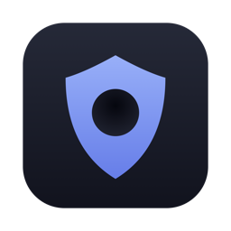

Hole GitHubPi-hole을 Mac 메뉴바에. 앱 하나가 DNS 단계에서 광고와 트래커를 막습니다. 브라우저도, 앱도 전부.
brew install --cask seongilp/tap/hole또는 DMG 다운로드 · Apple 공증 · Apple Silicon + Intel
Mac의 DNS를 Hole로 지정하세요.
networksetup -setdnsservers Wi-Fi 127.0.0.1Hole을 끄기 전에는 DNS를 되돌리세요: networksetup -setdnsservers Wi-Fi empty